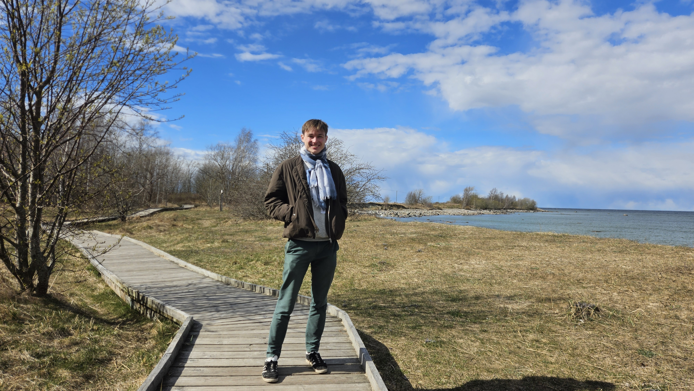
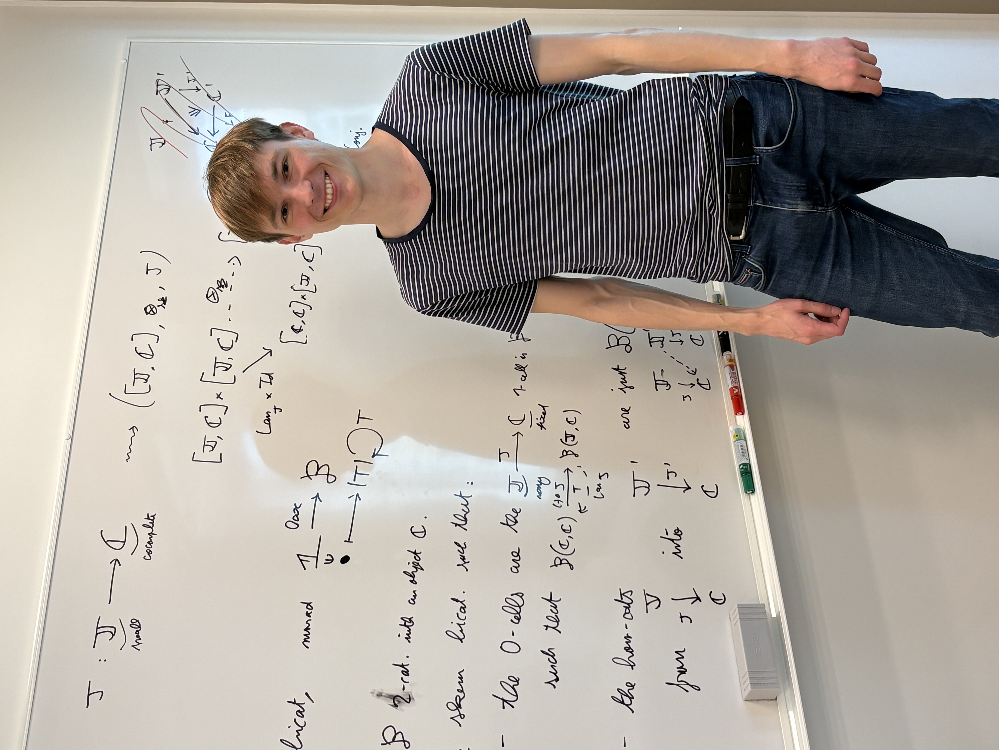

I am a Vincent Moreau, a postdoctoral researcher in computer science working with Paweł Sobociński in the Compositional Systems and Methods Group at the Tallinn University of Technology.
I am interested by the interface between mathematics and computer science. Here are a few topics I work on, and strive to connect together and understand from a categorical viewpoint:
My orcid number is 0009-0005-0638-1363.

Here are my DBLP page and my papers:
I did my PhD at IRIF in Paris, under the supervision of Paul-André Melliès and Sam van Gool. I defended on my PhD thesis in July 2025. Here is my manuscript: